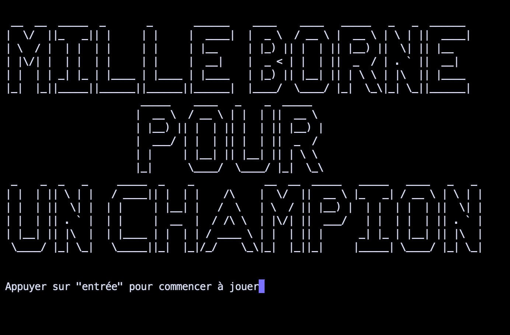
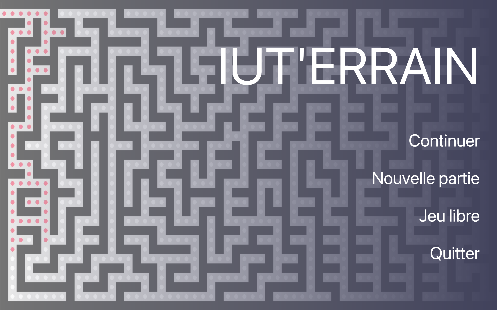
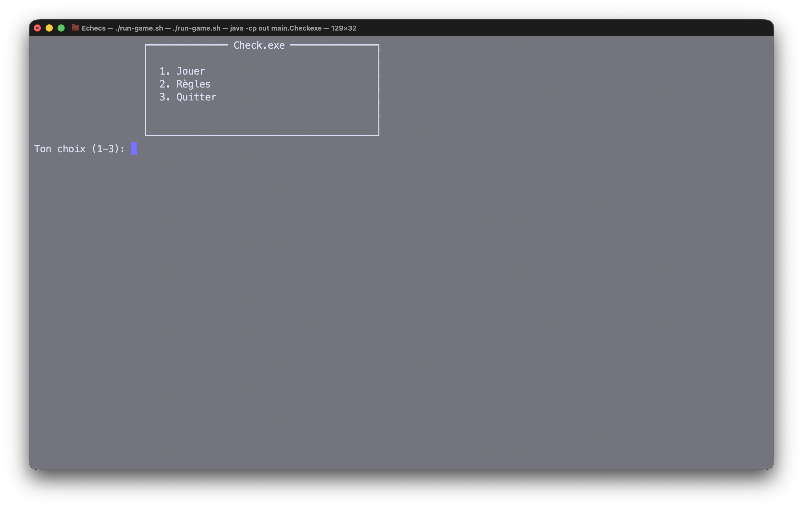

À propos de moi
Je suis Ylann Wattrelos, futur développeur passionné, actuellement étudiant en informatique. Je suis capable de réaliser des expériences web complètes et des applications Java robustes.
Si j'apprécie particulièrement le développement Java (notamment pour la POO et les applications d'entreprise avec Jakarta EE), ma curiosité me pousse également vers le développement web complet : du front-end (HTML, CSS) au back-end (JavaScript, Node.js, ou encore Java pour l'API). Je suis toujours curieux d'apprendre de nouvelles technologies.
Je suis constamment à la recherche de nouveaux défis et de projets qui me poussent hors de ma zone de confort. J'aime le travail d'équipe et ce que je peux apprendre des autres. Pour moi, l'apprentissage est un processus continu, essentiel dans le domaine de l'informatique qui est en constante évolution. Naturellement, je m'efforce de produire du code propre, documenté et maintenable.
Si vous ne me trouvez pas devant un ordinateur, vous me trouverez sans doute sur un terrain de basket.

Mes Projets




Compétences


Formation
BUT Informatique
IUT de Villeneuve-d'Ascq
Apprentissage de la programmation Java, du développement web et de la gestion de projets avec la méthode Agile.
Baccalauréat Général
Lycée Colbert, Tourcoing
Spécialités Mathématiques et Numérique et Sciences Informatiques (NSI).